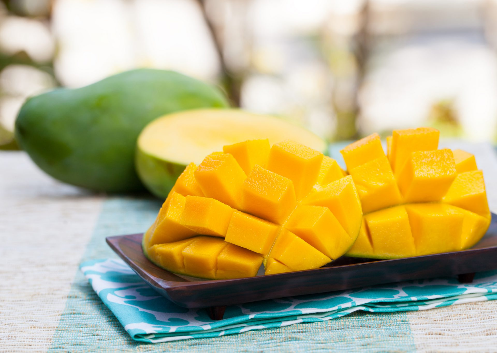

About Harum Manis
Harum Manis is a variety of mango that is grown and available in Perlis, state of Malaysia. "Harum" means fragrant while "Manis" means sweet, indicating that this type of mango is both fragrant and sweet. It is also known for the creamy texture and strong aroma that distinguish Harum Manis from other mangoes. Harum Manis can only be grown in specific environment that result in Perlis being the most suitable place to grow it
Mango is one of the popular tropical fruit that is loved by many because of their taste which can be used for a lot of recipe. They can be used for cooking, beverage and dessert. Harum Manis is a more popular variety of Mango because it elevate these recipe even more and thus cost much higher than other mangoes. They are also delicious to eat as they are